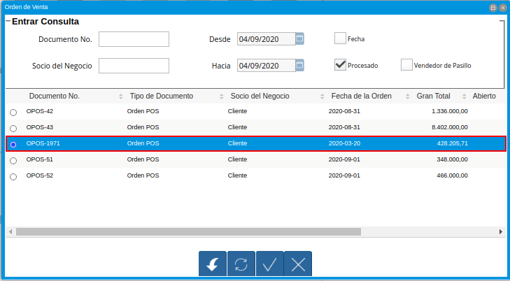

Anular Transacción de Venta¶
El proceo anular transacción de venta, permite realizar la devolución total de la venta, generando de manera automática y en estado “Completo”, los documentos “Orden de Devolución”, “Devolución” y “Nota de Crédito”.
Para mejor referencia de lo explicado anteriormente, se presenta a continuación el diagrama del proceso “Anular Transacción de Venta”, con la finalidad dar a conocer el comportamiento de ADempiere ante dicho proceso.
Imagen 1. Diagrama de Anular Transacción de Venta POS

A continuación, se específica el procedimiento que se debe realizar para anular correctamente una transacción de venta de POS.
Ejecución del Proceso¶
Ubique y seleccione en el menú de ADempiere, la carpeta “Gestión de Ventas”, luego seleccione la carpeta “Órdenes de Venta”, por último seleccione la carpeta “Punto de Venta”. Para finalizar, seleccione la ventana “Punto de Venta”.
Imagen 2. Menú de ADempiere

La interfaz de la ventana “Punto de Venta”, se encuentra definida de forma específica en el documento Interfaz de Punto de Venta, elaborado por ERPyA. Realice cada uno de los procesos explicados a continuación para obtener un resultado exitoso en la anulación de la transacción de venta por el punto de venta.
Realice la búsqueda de registros de órdenes de venta generadas desde el punto de venta, seleccionando el icono “Registros Históricos” de la barra de herramientas de la ventana “Punto de Venta”, dicho proceso se encuentra explicado en el documento Barra de Herramientas del Punto de Venta, elaborado por ERPyA.
Seleccione en la ventana “Orden de Venta”, generada del icono “Registros Históricos”, la orden de venta que requiere anular.

Imagen 3. Selección de Orden de Venta a Anular
Por último, seleccione la opción “OK” para ubicar en la ventana “Punto de Venta”, el registro de la orden de venta realizada desde el punto de venta.
Imagen 4. Selección de la Opción OK de la Orden de Venta a Anular

Luego de ubicar la orden de venta que requiere anular, seleccione la opción “Anular Transacción de Venta”, ubicada en el menú desplegado por el icono “Proceso” de la barra de herramientas de la ventana “Punto de Venta”, explicada en el documento Barra de Herramientas del Punto de Venta elaborado por ERPyA.
Imagen 5. Opción Anular Transacción de Venta del Icono Proceso de la Barra de Herramientas del Punto de Venta

Al seleccionar el proceso “Anular Transacción de Venta”, ADempiere muestra el mensaje para la confirmación de la ejecución del proceso, en el cual se debe seleccionar la opción “OK”, para ejecutar el mismo.
Imagen 6. Mensaje para Confirmación de Proceso

Luego de ejecutar la acción anteriormente explicada, ADempiere muestra un mensaje con el resultado del proceso.
Imagen 7. Resultado del Proceso Anular Transacción de Venta

Por último, se muestra el reporte del documento “Nota de Crédito de CxC” generada automáticamente desde el proceso “Anular Transacción de Venta”.
Imagen 8. Nota de Crédito de CxC Generada Automáticamente

Consulta de Documentos Generados¶
En la ventana “Orden de Devolución (Cliente)”, se puede visualizar el registro de la orden de devolución con ayuda del número de documento “OPOS-36106” generado en el reporte de la nota de crédito mostrada anteriormente.
Imagen 9. Consulta de Orden de Devolución Generada

De igual manera, se puede visualizar en la ventana “Devolución Cliente”, el registro generado desde el proceso anteriormente explicado.
Este documento se genera de manera automática, cuando existe un documento de entrega asociado a la venta.
Note
Recuerde que dicho documento de entrega se puede generar de manera automática según la configuración del tipo de documento, como se indica en el material Gestión PDV.
Imagen 10. Consulta de Devolución Generada

Finalmente, se puede visualizar en la ventana “Documentos por Cobrar”, el registro de la nota de crédito generado automáticamente desde el proceso anteriormente explicado.
Imagen 11. Consulta de Nota de Crédito Generada

Adicional a ello, se genera un egreso en caja con el tipo de documento “Pago Nacional”, para reflejar el movimiento de egreso realizado automáticamente al ejecutar el proceso “Anular Transacción de Venta”.
Imagen 12. Consulta de Pago Nacional Generado en Caja